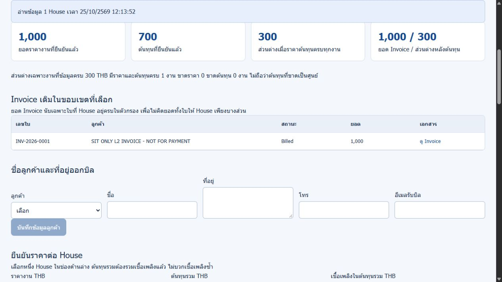
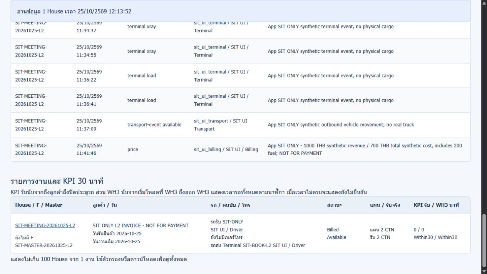

SIT L2: Invoice Draft → ปิดเป็น Billed
25 ตุลาคม 2026 • เวลา Asia/Bangkok • Production SCD Transport รุ่น 166af83 ไม่มีการ deploy โค้ดใหม่ในรอบนี้
ปิด INV-2026-0001 เป็น Billed สำเร็จ
House SIT-MEETING-20261025-L2 ยอดจำลอง 1,000 บาท ปิดครั้งเดียววันที่ 25/10/2026 12:12:34 น. งานเป็น Billed, readyForBilling=false, รถยัง Available และ receipt เดิม 2 CTN ไม่มีการส่งหรือเข้าคิวอีเมล
ผลจำลองแยก: พบ 1 จุดต้องแก้เรื่องกดปิดซ้ำ
นำ handler จริงมารันบนข้อมูลคัดลอกใน VM พบว่าการปิดบิลที่เป็น Billed แล้วตอบ 200 และเขียน billedDate ทับเวลาแรก ไม่ได้กดซ้ำบน production เพื่อรักษาเวลาปิดครั้งแรกของ L2 ผลนี้ยังเป็น FAIL ของการจำลอง ไม่ปนกับผลปิดครั้งเดียวบนระบบจริง
1. ขอบเขตและความหมายของผล
- ผลระบบจริง: ตรวจ Draft เดิม ตรวจสิทธิ์ Driver/Transport ปิดหนึ่งครั้งด้วย Admin ผ่าน API อ่านสถานะ Billed จากเซิร์ฟเวอร์และหน้าเว็บ ตรวจเอกสารเดิม hash เท่าเดิม และเทียบ baseline
- ข้อมูลจำลองเฉพาะ SIT: ลูกค้า SIT ONLY L2 INVOICE - NOT FOR PAYMENT ที่อยู่ รายได้ 1000 ต้นทุน 700 และหลักฐานขนส่ง/คลัง/Terminal เดิม ไม่ใช่งานรับส่งหรือเงินของลูกค้าจริง
- Billed ในระบบ: หมายถึงปิดขั้นวางบิล ไม่ใช่ Paid ไม่ได้ยืนยันการชำระเงินจริง ไม่ใช่ใบเสร็จหรือรายการโอนเงิน
- ไม่ส่งอีเมลจริง: ไม่เรียก /api/billing/send-email ไม่สร้าง InvoiceSent/Sent/EmailQueued ปลอม และไม่มี sentAt/emailDeliveryStatus/emailAttachments เพิ่ม ตรวจแล้ว email/LINE ไม่ได้ตั้งค่าไว้ จึงไม่มี webhook แจ้งเตือนภายนอกจากการปิดครั้งนี้
- ผลจำลอง: เรียก handler ที่อ่านจาก source ใน VM โดย mock ฐานข้อมูล เวลา และ alert ไม่มี network call ไม่แก้ production ไม่สร้างเลข Invoice ใหม่
2. สรุปก่อน–หลัง
| ข้อมูล | ก่อน | หลัง |
|---|
| Invoice / House | INV-2026-0001 / SIT L2 | เดิม |
| Invoice status | Draft | Billed |
| Job status / billingStatus | InvoiceDrafted | Billed / Billed |
| readyForBilling | true | false |
| ยอด / ต้นทุน / ส่วนต่างจำลอง | 1000 / 700 / 300 บาท | เดิม |
| วันที่สร้าง / Due Date / Customer | ตาม Invoice เดิม | เดิม ไม่เปลี่ยน |
| billedDate | ยังไม่มี | 25/10/2026 12:12:34 น. |
| รถ / receipt / QA / Flight / Terminal | Available / 2 CTN / เดิม | เดิม |
| อีเมลส่ง/เข้าคิว | ไม่มี | ไม่มี |
| Invoice HTML | เอกสารเดิมที่มี Address | HTTP 200 เนื้อหา byte-for-byte เท่าเดิม สถานะ Billed ดูจากทะเบียน ไม่ได้ประทับสถานะลง HTML |
3. ขั้นทดสอบและผลที่ควรได้
| ขั้น | ผลที่คาด | ผลจริง |
|---|
| ตรวจ Invoice เดิม | เป็น Draft ของ L2 ยอด 1000 ยังไม่ Billed | ผ่าน |
| Driver / Transport ขอปิด | 403 และบิลไม่เปลี่ยน | ผ่านทั้งสองยูส |
| ปิดครั้งเดียวโดย Admin | 200 → Billed พร้อม billedDate | ผ่าน |
| อ่านงานหลังปิด | Billed, readyForBilling=false, ไม่มีการเปลี่ยน receipt/รถ/หลักฐาน | ผ่าน |
| อ่านทะเบียนเฉพาะ L2 | มี Invoice เดิม 1 ใบ Billed ยอด 1000 ไม่เพิ่มบิล | ผ่าน |
| ตรวจอีเมล | ไม่ส่ง ไม่เข้าคิว ไม่เพิ่มเวลาส่ง | ผ่าน |
| เปิดเอกสารย้อนหลัง | HTTP 200 และ hash เดิม | ผ่าน |
| งานอื่น/Geofencing | ไม่เปลี่ยน และปิด Geofencing | ผ่าน |
| ปิดซ้ำ — จำลองเท่านั้น | 409 หรือ idempotent ที่คงเวลาเดิม | ไม่ผ่าน: 200 และ billedDate ถูกทับ |
| เปลี่ยนราคา/refresh เอกสารหลัง Billed บน production | ไม่จำเป็นต่อการปิดบิลครั้งนี้ | NOT RUN — ตัด POST เหล่านี้ออกหลัง auto-review ปฏิเสธ ไม่อ้างว่าได้ทดสอบผ่าน |
4. วิธีทำตามบนหน้าจอสำหรับชุด SIT ใหม่
L2 ปิดแล้ว ใช้ตรวจย้อนหลังเท่านั้น ยังไม่ควรกดปิดซ้ำจนแก้ปัญหาเวลาปิดทับ ถ้าต้องการเดิน Draft → Billed ใหม่ ให้ใช้ Invoice SIT รอบใหม่ ไม่ลบหรือย้อน L2
- เข้าด้วย Billing หรือ Admin เปิด งานภาคสนาม → Billing กรอก House SIT และ Invoice ID ให้ตรง ตรวจลูกค้าเป็น SIT ONLY ยอด 1000 และสถานะ Draft
- ตรวจ Preview, Address, เอกสารแนบ และเอกสารที่เปิดจาก storage ว่าตรงกัน หากจะใช้โหมดไม่ส่งอีเมล ห้ามกด “ส่งอีเมลวางบิล” ไม่ต้องสร้างสถานะ Sent/EmailQueued จำลอง
- ถ้าต้องการทดสอบสิทธิ์ ให้ใช้ยูส Driver/Transport ต้องถูกปฏิเสธ 403 โดยไม่เปลี่ยนข้อมูล ห้ามเปลี่ยนบทบาทผู้ใช้จริงเพื่อข้ามสิทธิ์
- ด้วย Billing/Admin กด ปิดเป็น Billed ตรวจเลข Invoice ในกล่องยืนยัน แล้วกดยืนยันเพียงครั้งเดียว หน้าจอแจ้งว่าจะออกจากคิวรอวางบิลและต้องดูย้อนหลัง
- หากรอคำตอบนาน ห้ามกดซ้ำ ให้เปิดทะเบียนอ่านสถานะก่อน เพราะข้อ BILLED-L2-01 ยังไม่แก้
- เปิด Transport · Terminal · วางบิล ค้น House เดิม → แท็บ วางบิล → กดรีเฟรช ต้องพบเลขเดิมสถานะ Billed ยอดเดิม มีเพียงหนึ่งใบ
- ดูรายการงานด้านล่าง ต้องเห็น Billed / Available และแผน/receipt SIT 2 CTN ส่วน readyForBilling เป็น false ตามข้อมูลเซิร์ฟเวอร์
- กด ดู Invoice ต้องเปิดเอกสารเดิมที่มี Address และ Total 1000 THB ไม่ต้องแก้เอกสารเพื่อเพิ่มสถานะ Billed และไม่ต้องพิมพ์ป้ายใหม่
- ตรวจว่าไม่เพิ่ม sentAt/emailDeliveryStatus/emailAttachments และไม่เพิ่ม Invoice ใหม่ จากนั้นเทียบงานอื่น/ลูกค้า/คิว/คลัง/นโยบายกับ baseline ปิด session ทดสอบชั่วคราว
วิธีที่ใช้จริงรอบนี้: ปิดหนึ่งครั้งผ่าน API ด้วย Admin และตรวจ UI จริง ไม่ได้กดปุ่มปิดบนเว็บเพิ่มอีกครั้ง ส่วนขั้นกดปุ่มด้านบนเป็นคู่มือใช้งานที่อ้างอิง handler หน้าเว็บ
5. ภาพหน้าจอจริง
 ก่อนปิด: INV-2026-0001 เป็น Draft ลูกค้า SIT และยอด 1000 บาท — ภาพ production จริง คลิกเพื่อเปิดขนาดเต็ม
ก่อนปิด: INV-2026-0001 เป็น Draft ลูกค้า SIT และยอด 1000 บาท — ภาพ production จริง คลิกเพื่อเปิดขนาดเต็ม
ทะเบียน Invoice หลังปิด สถานะ Billed และยอดเดิม — ภาพ production จริง คลิกเพื่อเปิดขนาดเต็ม
งาน L2 เป็น Billed รถ Available receipt เดิม 2 CTN — ภาพ production จริง คลิกเพื่อเปิดขนาดเต็ม Invoice เดิมเปิดได้ ที่อยู่ House และยอดยังตรง ไม่มีการแก้เนื้อหา — ภาพ production จริง คลิกเพื่อเปิดขนาดเต็ม
Invoice เดิมเปิดได้ ที่อยู่ House และยอดยังตรง ไม่มีการแก้เนื้อหา — ภาพ production จริง คลิกเพื่อเปิดขนาดเต็ม Geofencing ปิดและยังไม่มีพิกัด WH3 — ภาพ production จริง คลิกเพื่อเปิดขนาดเต็ม
Geofencing ปิดและยังไม่มีพิกัด WH3 — ภาพ production จริง คลิกเพื่อเปิดขนาดเต็ม
6. ผลจำลองแบบแยกจาก production
ใช้โค้ด handler mark-billed จริงจากรุ่น 166af83 ข้อมูล fixture อยู่ใน VM ไม่ส่ง HTTP หรือแก้ไฟล์ฐานข้อมูล production เวลาที่ปรากฏในตารางนี้เป็นเวลาจำลอง ไม่ใช่ billedDate จริงด้านบน
| กรณี | คาดหวัง | ผลจำลอง | ผล |
|---|
| isolated-driver-denied | 403 | 403 | PASS |
| isolated-draft-to-billed-without-email | Billed | "Billed" | PASS |
| isolated-repeat-close-preserves-first-billed-date | 409 or idempotent 200 with original billedDate | {"httpStatus": 200, "firstBilledDate": "2026-10-25T06:00:01.000Z", "repeatedBilledDate": "2026-10-25T06:00:03.000Z"} | FAIL |
BILLED-L2-01: handler ยังไม่มี guard สำหรับสถานะ Billed เดิม จึงเขียน billedDate ใหม่ทุกครั้ง แนวทางแก้คือปฏิเสธการปิดซ้ำ หรือคืนผล idempotent โดยไม่เปลี่ยน billedDate/สถานะ/ประวัติ ควรทำให้ทั้ง API และปุ่มเว็บใช้กติกาเดียวกัน และต้องคงเวลาปิดครั้งแรกจริงของ L2 ไม่ใช้เวลา fixture มาทับ รอบนี้ยังไม่แก้โค้ดหรือ deploy
7. Isolation audit และอีเมล
ตรวจงานนอก L2 3,805 รายการไม่พบการเปลี่ยน เทียบฟิลด์ธุรกิจและการเงิน รวม L1/L3 เดิม ไม่มี Invoice เพิ่มหรือลบ ลูกค้า ผู้ใช้ นโยบาย Dock bays/queue และแผนที่คลังคงเดิม L2 เปลี่ยนเฉพาะสถานะงาน billingStatus readyForBilling และ dueDate ที่รับจากบิล ส่วน Invoice เปลี่ยนเฉพาะ status กับ billedDate
Hash งานนอก L2 ก่อน: eec8aefc8b497df3a906941c0a6555728d926b8592e73f35e7701e5228a5b1d6
หลัง: eec8aefc8b497df3a906941c0a6555728d926b8592e73f35e7701e5228a5b1d6
Hash Invoice HTML ก่อน/หลังเท่ากัน: ef567b4b72c764f4eef095adfefbdbcee08971349cba38728b9ffc928b2a251d
Geofencing ยังปิด พิกัด WH3 เว้นไว้ ไม่ตั้งค่า integration หรือแก้รหัสผ่าน ปิด API grant ชั่วคราวแล้ว ไม่มีการส่งอีเมลหรือเรียกเก็บเงินจริง ไม่ยืนยัน Paid
8. ขอบเขตที่งดและเหตุผล
auto-review ปฏิเสธคำสั่ง verify รุ่นแรกเพราะมี POST ทดสอบเปลี่ยนราคาเป็น 2000 บาทและ refresh เอกสารหลัง Billed บน production แม้ตั้งใจคาดหวังให้บล็อก คำสั่งนั้นไม่ได้รัน จึงนำ POST เหล่านั้นออกและตรวจหลังปิดแบบอ่านอย่างเดียวแทน ไม่เปลี่ยนการป้องกันและไม่ลองส่งผ่านช่องทางอื่น ไม่ต้องอนุมัติเพิ่มเพื่อให้ผลปิดบิลและ audit ในขอบเขตนี้เสร็จ
9. ผลคำขอจริงทั้งหมด
PASS 18 จาก 18 คำขอ รวมอ่าน baseline/ตรวจสิทธิ์/อ่านหลังปิด ไม่รวม FAIL ของการจำลอง ผลการปิดจริงหนึ่งครั้งผ่าน แต่ไม่ได้สรุปว่าทุกพฤติกรรม Billed ผ่าน
| # | คำขอ | HTTP คาด/ได้ | ผล | ข้อความ |
|---|
| 1 | check-no-outbound-notifications | 200 / 200 | PASS | |
| 2 | baseline | 200 / 200 | PASS | |
| 3 | policy-before | 200 / 200 | PASS | |
| 4 | dock-before | 200 / 200 | PASS | |
| 5 | map-before | 200 / 200 | PASS | |
| 6 | temporary-api-session | 200 / 200 | PASS | |
| 7 | existing-driver | 200 / 200 | PASS | |
| 8 | existing-transport | 200 / 200 | PASS | |
| 9 | driver-cannot-mark-billed | 403 / 403 | PASS | ไม่มีสิทธิ์ดำเนินการวางบิล |
| 10 | transport-cannot-mark-billed | 403 / 403 | PASS | ไม่มีสิทธิ์ดำเนินการวางบิล |
| 11 | guard-before-single-close | 200 / 200 | PASS | |
| 12 | close-sit-invoice-once | 200 / 200 | PASS | |
| 13 | after | 200 / 200 | PASS | |
| 14 | policy-after | 200 / 200 | PASS | |
| 15 | map-after | 200 / 200 | PASS | |
| 16 | dock-after | 200 / 200 | PASS | |
| 17 | filtered-billing-summary | 200 / 200 | PASS | |
| 18 | revoke-temporary-api-sessions | 200 / 200 | PASS | |